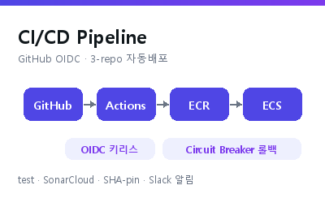

키리스 CI/CD + build-once 승격
문제 장기 액세스키가 유출될 수 있었고, dev와 prod에 서로 다른 이미지가 배포될 위험이 있었습니다.
과정 GitHub Actions OIDC 키리스 인증으로 액세스키를 없앴습니다. dev에서 검증한 이미지는 crane copy로 같은 digest 그대로 prod에 승격했습니다.
결과 dev는 자동 배포, prod는 PR 머지 게이트를 거칩니다. prod에는 dev에서 검증한 이미지만 올라갑니다.
GitHub ActionsOIDCArgoCDJenkins